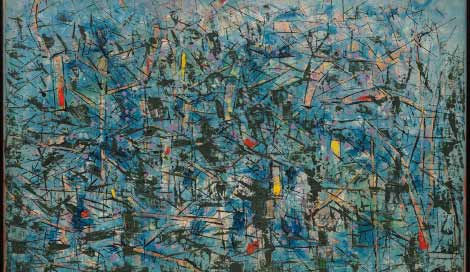

Surgiu originalmente no seculo XX na Europa com intuito de quebrar o padrão cultural que já vinha sendo herdado de tempos atrás. Wassily Kandinsky(1866 – 1944), foi considerado o criador do movimento, com a obra renomada chamada "Primeira Aquarela Abstrata" de 1910. Formas diversas, cores, linhas e elementos únicos formavam uma obra e um conceito simples de se expressar sem depender de nada que já existia, ou seja, arte sem compromisso com o mundo real, tendo isso como objetivo principal do movimento.
Abstracionismo no Brasil

Principais características do abstracionismo
O abstracionismo surge com bastante influencia de outros movimentos artisticos, o cubismo e o futurismo. Com a ausencia de padrões e quebra da realidade, tendo tecnicas de pintura que á deixam assimetrica porém, ainda sim transmitindo:
Arte não representacional
Ausência de objetos reconhecíveis
Arte subjetiva
Causavam diversas interpretações
Valorização de formas, cores, linhas e texturas
Abstracionismo e suas vertentes
O abstracionismo assim como a maioria dos movimentos do modernismo vem com diversas formas de se colocar